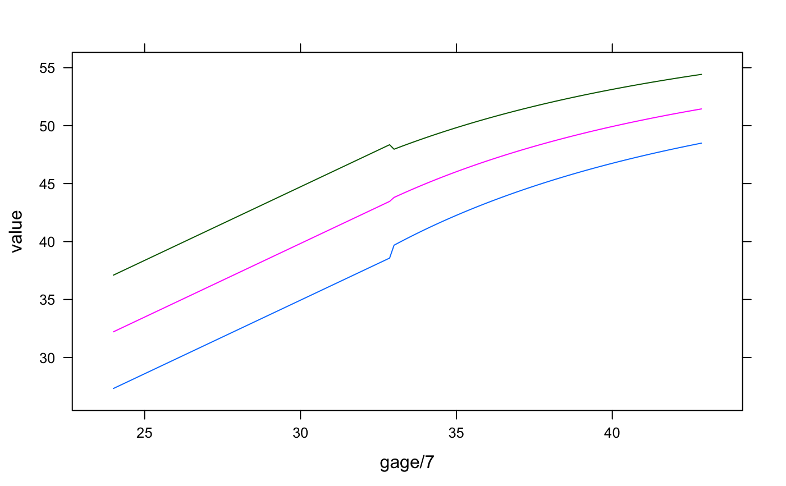

igb_zscore2var.RdConvert INTERGROWTH z-scores/centiles to birth measurements
igb_zscore2lencm(gagebrth, z = 0, sex = "Female") igb_zscore2wtkg(gagebrth, z = 0, sex = "Female") igb_zscore2hcircm(gagebrth, z = 0, sex = "Female") igb_zscore2wlr(gagebrth, z = 0, sex = "Female") igb_centile2lencm(gagebrth, p = 50, sex = "Female") igb_centile2wtkg(gagebrth, p = 50, sex = "Female") igb_centile2hcircm(gagebrth, p = 50, sex = "Female") igb_centile2wlr(gagebrth, p = 50, sex = "Female")
| gagebrth | gestational age at birth in days |
|---|---|
| z | z-score(s) to convert |
| sex | "Male" or "Female" |
| p | centile(s) to convert (must be between 0 and 100) |
For gestational ages between 24 and 33 weeks, the INTERGROWTH very early preterm standard is used.
International standards for newborn weight, length, and head circumference by gestational age and sex: the Newborn Cross-Sectional Study of the INTERGROWTH-21st Project Villar, José et al. The Lancet, Volume 384, Issue 9946, 857-868
INTERGROWTH-21st very preterm size at birth reference charts. Lancet 2016 doi.org/10.1016/S0140-6736(16) 00384-6. Villar, José et al.
# get 99th centile for Male birth weights across some gestational ages igb_centile2wtkg(168:300, 99, sex = "Male")#> [1] 0.9991985 1.0186739 1.0384696 1.0585902 1.0790402 1.0998242 1.1209468 #> [8] 1.1424126 1.1642266 1.1863934 1.2089179 1.2318051 1.2550599 1.2786874 #> [15] 1.3026927 1.3270809 1.3518573 1.3770272 1.4025958 1.4285686 1.4549511 #> [22] 1.4817488 1.5089673 1.5366123 1.5646895 1.5932047 1.6221637 1.6515726 #> [29] 1.6814372 1.7117637 1.7425582 1.7738270 1.8055762 1.8378124 1.8705418 #> [36] 1.9037710 1.9375065 1.9717551 2.0065234 2.0418183 2.0776467 2.1140154 #> [43] 2.1509315 2.1884022 2.2264347 2.2650362 2.3042141 2.3439758 2.3843289 #> [50] 2.4252810 2.4668398 2.5090130 2.5518086 2.5952345 2.6392988 2.6840095 #> [57] 2.7293750 2.7754036 2.8221036 2.8694835 2.9175521 2.9663179 3.0157898 #> [64] 3.0564180 3.0955936 3.1342758 3.1724682 3.2101759 3.2474019 3.2841504 #> [71] 3.3204248 3.3562286 3.3915659 3.4264403 3.4608566 3.4948170 3.5283240 #> [78] 3.5613826 3.5939964 3.6261678 3.6579000 3.6891984 3.7200645 3.7505016 #> [85] 3.7805132 3.8101031 3.8392735 3.8680271 3.8963698 3.9243013 3.9518260 #> [92] 3.9789462 4.0056661 4.0319877 4.0579147 4.0834500 4.1085945 4.1333530 #> [99] 4.1577278 4.1817214 4.2053359 4.2285764 4.2514424 4.2739387 4.2960668 #> [106] 4.3178294 4.3392300 4.3602701 4.3809523 4.4012807 4.4212552 4.4408793 #> [113] 4.4601555 4.4790866 4.4976743 4.5159215 4.5338306 4.5514030 4.5686409 #> [120] 4.5855474 4.6021249 4.6183750 4.6342991 4.6499014 4.6651828 4.6801452 #> [127] 4.6947905 4.7091219 4.7231409 4.7368487 4.7502495 4.7633430 4.7761319# recreate figure from preterm paper d <- expand.grid(centile = c(3, 50, 97), gage = 168:300) d$value <- igb_centile2lencm(d$gage, d$centile, sex = "Male") lattice::xyplot(value ~ gage / 7, groups = centile, data = d, type = "l")